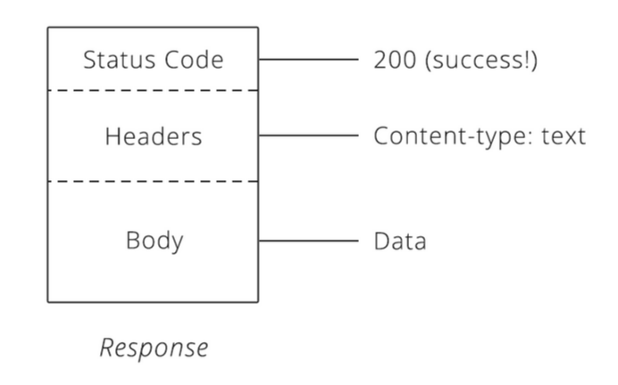

An Application Programming Interface is a software service/resource for other software to interact with.
In a survey report released by Layer 7, 86.5% of large organizations plan to have an API for open-consumption by 2018. By 2013, 10,000 APIs were on the market, quadruple the number available in 2010.
Almost every mobile app uses APIs to retrieve and manipulate data from a database. Here are just a few examples:
Usually, just googling the company name with “API” or “REST API” will allow you to locate existing documentation.
Popular APIs on the web include Facebook, Twitter, Stripe and Google Maps.
A good metaphor for computer protocol is polite etiquette between humans. For courteous interaction, people interact according to certain accepted rules. For computers, these rules are even more specific, and we call them protocols. The most common protocol on the web HyperText Transfer Protocol (HTTP) specifies certain rules for the request-response cycle. Many companies choose to adopt HTTP as the protocol to access their APIs due to it’s ubiquity on the web.
When you type http:// in your browser, you are essentially asking the browser to use the protocol “HTTP” when communicating information to the server. You are specifying that this is how your request will be formatted with the following properties:
Let’s take an in-depth look at each one.
The url fieldspecifies a unique address for the resource you are trying to access. A URL is URI (Uniform Resource Identifier) with the means to locate said resource. What this means is, that the URL is the most commonly used subset of URI’s due to providing accessibility to the actual said resource [full path and means to retrieve data], instead of just identifying it, like a less common URN (Uniform Resource Name).
Include meta-data about a request, including time sent and size of request body.
Contains the data that the client wants to send. The client has complete control over what to include in this part while the rest must follow a rigid HTTP protocol.
Instead of a method and URL, HTTP responses include a status code.
Three-digit numbers that contain unique information about the success of your request.

Let’s see HTTP requests in action. Navigate to your Developer Tools console and click on the Network tab. Then click around on any page, you should see the fields populate with requests as event handlers are triggered.
Despite the name, use of XML to send data is
not required, and HTML or JSON is often used instead - particularly with
jQuery.
AJAX allows Web applications to send and receive data
from a server asynchronously. Because these events happen in the
background, they don’t interfere with the existing page’s display or
behavior.
Without AJAX, a web page would need to be completely reloaded for every change that takes place. That is quite inefficient and time consuming, and makes for a bad user experience. Think about your Gmail account–imagine that every time you wanted to see new messages, you had to refresh the page completely. All your messages would be requested again and the entire page (HTML, CSS, and JavaScript) would be rebuilt as well. But that isn’t what happens. Instead, you can request only the new messages, and only update the relevant parts of the page. That’s a whole lot quicker. AJAX is not another programming language. It’s a technique that uses existing JavaScript functionality to make asynchronous requests.
The programming you have done so far has been synchronous. Perhaps the easiest way to think of this is that everything happens in order, and one process doesn’t start until the process before it finishes. With asynchronous programming, one part of your code can start running, and the rest of your code can keep going even if that first part isn’t finished. This is extremely useful for tasks that take a long time–for example, requesting information from a server.
When your JavaScript code sends a request to a URL, and when it receives a response, a callback function can be triggered to handle the response. While waiting for the response, because AJAX is asynchronous, the rest of your JavaScript code can continue to execute, and when you receive a response, that event will trigger your callback function, which will then process the returned data.
JSON stands for “JavaScript Object Notation”. A JSON file looks like this:
{
"book1": {
"title": "The Hobbit",
"author": {
"name": "J.R.R. Tolkien",
"nationality": "English"
},
"genres": ["fantasy"]
},
"book2": {
"title": "Ender's Game",
"author": {
"name": "Orson Scott Card",
"nationality": "American"
},
"genres": ["science fiction"]
}
}
Note that in JSON, both the attributes and the values must be in double-quotes.
Since the JSON syntax is a subset of JavaScript syntax, it does not need to be translated or parsed to be used by JavaScript. You can still do something like:
var books = { ... }
console.log(books.book1.author.name);
console.log(books.book2.genres[0]);
Create a new file called “books.json”.
Inside, make a JSON
object that holds at least three books.
Each book should have the
following information: